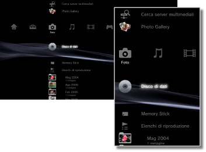

Foto > Categoria Foto
Categoria Foto
Sotto  (Foto) sono visualizzate le seguenti icone. Le icone visualizzate variano in base alle condizioni di utilizzo.
(Foto) sono visualizzate le seguenti icone. Le icone visualizzate variano in base alle condizioni di utilizzo.

 |
Cerca server multimediali | Consente di avviare la ricerca di server multimediali DLNA connessi alla stessa rete. |
|---|---|---|
 |
Utilizzo di Photo Gallery | Utilizzare l'applicazione per migliorare la visualizzazione delle fotografie salvate sul sistema PS3™. |
 |
Salva istantanea della schermata | Salva l'istantanea della schermata dal software in formato PlayStation®3 durante l'utilizzo del gioco. Questa opzione è disponibile solo quando il software in uso supporta questa funzione. |
 |
Server multimediale | Consente di connettersi ai server multimediali DLNA e di visualizzare le immagini memorizzate. L'icona visualizzata dipende dal tipo di server. |
  |
Disco di dati | Consente di visualizzare i file di immagine salvati su dischi registrabili compatibili, ad esempio CD-R o DVD-R. |
 |
Memory Stick™ | Visualizza file di immagine salvati su supporti Memory Stick™.* |
 |
SD Memory Card | Visualizza file di immagine salvati su SD Memory Card.* |
 |
CompactFlash® | Visualizza file di immagine salvati su CompactFlash®.* |
 |
PSP™(PlayStation®Portable) | Visualizza file di immagini salvati sui supporti Memory Stick™ del sistema PSP™. |
 |
PSP™(PlayStation®Portable) | Visualizza file di immagini salvati nella memoria di sistema del sistema PSP™go. |
 |
Fotocamera digitale | Visualizza file di immagine salvati su una fotocamera digitale compatibile con il sistema PS3™. |
 |
WALKMAN®/ATRAC Audio Device (WALKMAN®) | Visualizza file di immagine salvati su un WALKMAN®/ATRAC Audio Device (WALKMAN®). |
 |
ATRAC Audio Device | Visualizza file di immagine salvati su un ATRAC Audio Device. |
 |
Dispositivo USB | Visualizza file di immagine salvati su un dispositivo di archiviazione USB. |
 |
Elenchi di riproduzione | È possibile creare un elenco di riproduzione, modificare o riprodurre elenchi di riproduzione già creati. |
| Immagini fotocamera digitale | Visualizza file di immagine salvati nella cartella DCIM di una fotocamera digitale. | |
| (cartella) | Questa icona viene visualizzata quando sono disponibili cartelle create su un PC. | |
| (file salvati sul disco rigido) | Visualizza file di immagine salvati sul disco rigido del sistema PS3™. Vengono visualizzate immagini in miniatura. |
| * |
Con alcuni modelli, per utilizzare supporti di memorizzazione è necessario disporre di un adattatore USB appropriato (non in dotazione). Quando utilizzato con un adattatore USB, il supporto di memorizzazione viene visualizzato come |
|---|
 (Dispositivo USB).
(Dispositivo USB).Note
- Per ulteriori informazioni sullo standard DLNA, vedere
 (Impostazioni) >
(Impostazioni) >  (Impostazioni di rete) > [Connessione al server multimediale] della presente guida.
(Impostazioni di rete) > [Connessione al server multimediale] della presente guida. - In rari casi, i dischi e altri supporti potrebbero non funzionare correttamente quando riprodotti nel sistema PS3™. Tale problema è causato principalmente da variazioni del processo produttivo o della codifica del software.